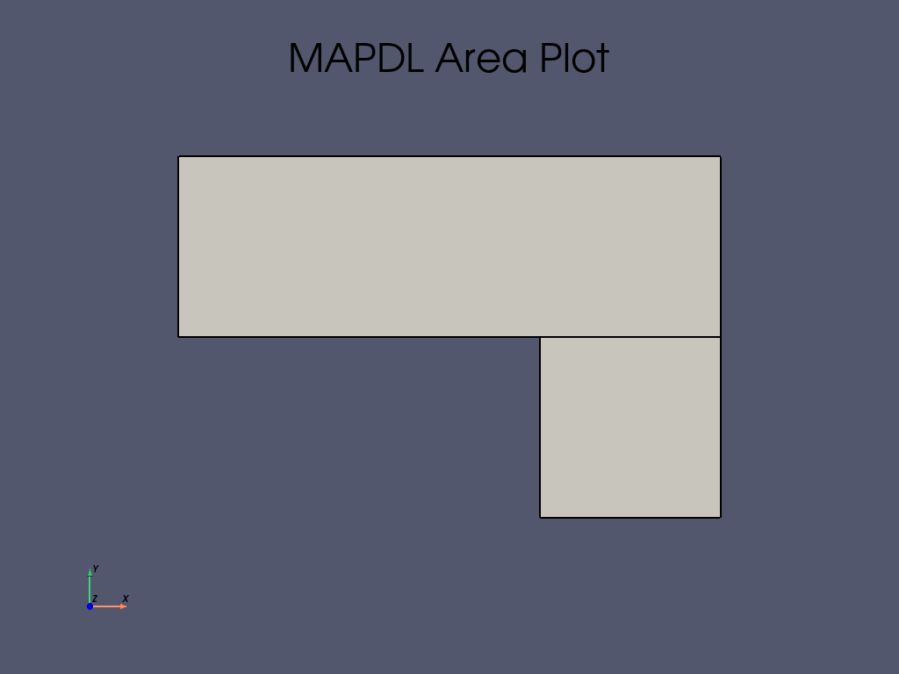
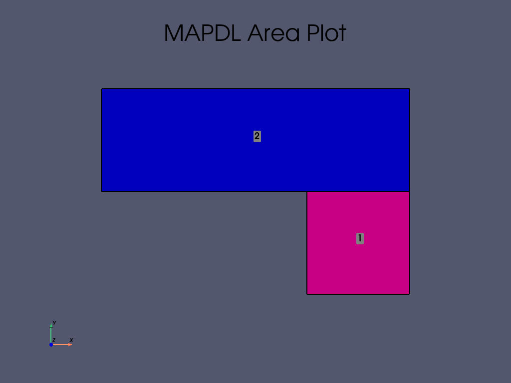
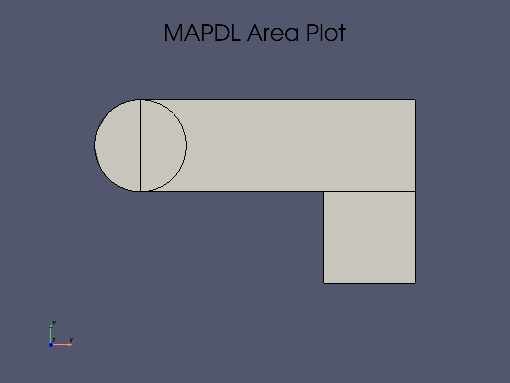
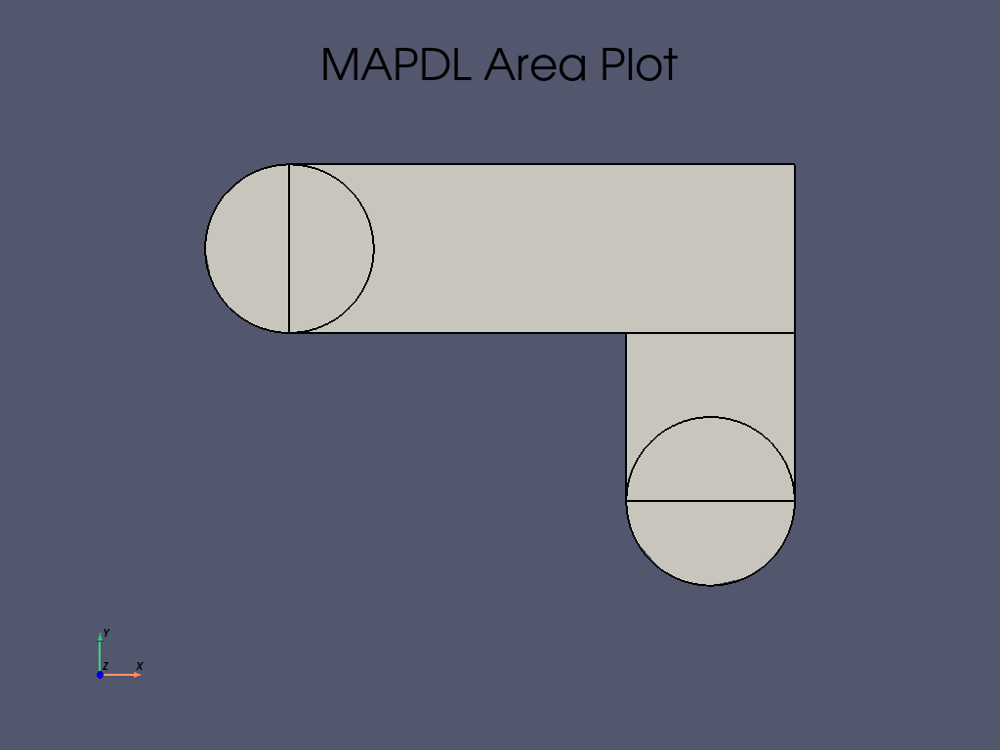

Note
Go to the end to download the full example code
角钢支架的静态分析#
本例改编自 Ansys APDL 经典教程 Static Analysis of a Corner Bracket（角钢支架的静态分析） 。
Problem specification#
Applicable Products: |
Ansys Multiphysics, Ansys Mechanical, Ansys Structural |
Level of Difficulty: |
Easy |
Interactive Time Required: |
60 to 90 minutes |
Discipline: |
Structural |
Analysis Type: |
Linear static |
Element Types Used: |
|
Features Demonstrated: |
Solid modeling including primitives, boolean operations, and fillets; tapered pressure load deformed shape and stress displays; listing of reaction forces; |
Help Resources: |
Structural Static Analysis and PLANE183 |
Problem description#
这是一个简单的、单荷载步的角钢支架结构静力分析。左上方的销孔在其整个圆周上受到约束（焊接）， 右下方的销孔底部受到锥形压力载荷。使用美国习惯单位制。目的是演示 MAPDL 在分析中的典型应用。
Bracket model#
角支架的尺寸如下图所示。支架由 A36 钢制成，其杨氏模量为 \(3\cdot10^7\) psi ，泊松比为 \(0.27\) 。
{kind=link}
支架型号尺寸#
Approach and assumptions#
由于支架在 Z 方向的厚度（1/2 英寸）比其 X 和 Y 方向的尺寸薄，而且压力载荷只作用在 X-Y 平面上，因此在分析时应假设为平面应力问题。
这种方法是使用实体建模生成二维模型，并自动用节点和单元对其进行网格划分。 另一种方法是直接创建节点和单元。
Launching MAPDL#
Build the geometry#
Define rectangles#
在 Mechanical APDL 中创建模型几何体有几种方法，有些方法比其他方法更方便。第一步是认识到可以使用矩形和圆形组合轻松构建支架。
选择一个任意的全局原点位置，然后根据该原点定义矩形和圆形。在本分析中，使用左上方孔的中心点。首先定义一个相对于该位置的矩形。
APDL 命令 mapdl.rectng() 用于创建一个具有 X1, X2 , Y1 和 Y2 尺寸的矩形。
在 PyMAPDL 中，mapdl() 类用于调用 APDL 命令。
Dimension box 1#
输入以下内容：
X1 = 0
X2 = 6
Y1 = -1
Y2 = 1
或者使用 Python 列表来存储几何尺寸：
box1 = [0, 6, -1, 1]
Dimension box 2#
输入以下内容：
box2 = [4, 6, -1, -3]
mapdl.prep7() 命令启动 APDL 前处理器，开始建立分析。
这是创建模型几何体的处理器。
mapdl.prep7()
*** MAPDL - ENGINEERING ANALYSIS SYSTEM RELEASE 2023 R1 23.1 ***
Ansys Mechanical Enterprise
20120530 VERSION=WINDOWS x64 16:56:57 JAN 23, 2024 CP= 0.078
***** MAPDL ANALYSIS DEFINITION (PREP7) *****
利用 Python 的 list 或 dict 类等 Python 特性，可以尽可能多地参数化。
好的做法是将所有参数放在输入文件的顶部或附近。不过，在本互动教程中，这些参数都是内联的。（“内联”（inline） 这个词，是什么意思？ ————ff）
1
在 Python 中，可以在函数调用中使用 * 来解包对象。例如
mapdl.rectng(*box2) # 打印所创建 area 的 ID，ID = 2
2
Plot areas#
PyMAPDL 绘图可以通过传递给不同绘图方法的参数来控制，例如 mapdl.aplot() 。
area 图中的两个矩形颜色相同。
要更清楚地区分 area ，可以打开 area 编号（ show_area_numbering=True )或者显示 area 颜色（ color_area=True )。
有关详细信息，请参阅 mapdl.aplot() 方法。
mapdl.aplot(cpos="xy", show_lines=True,)
mapdl.aplot(cpos="xy", show_lines=True, show_area_numbering=True,color_areas=True)
- 
- 
Note
如果下载了 本例 的 Jupyter Notebook 版本，就可以利用 Jupyter Notebook 的功能。例如，你可以右键单击命令来显示上下文帮助。
Create first circle#
利用逻辑和布尔几何运算，您可以使用原始几何参数（ box1 , box2 ）来定位圆。
在支架两端各创建一个半圆。首先在两端各创建一个全圆，然后使用布尔添加操作（在 Subtract pin holes from bracket 中讨论）将圆和矩形组合起来。
创建圆的 APDL 命令是 mapdl.cyl4() 。
第一个圆形区域位于左侧 X、Y 位置，半径为 \(1\) 。
Create second circle#
在 X、Y 位置创建第二个圆：
使用这些参数值创建新 area ，其半径与第一个圆形相同，即 \(1\)。
Add areas#
现在已经定义了模型的相应部分（矩形和圆形），将它们添加到一起，使模型成为一个连续的区域。
使用布尔加操作 mapdl.aadd() 将 area 合并到一起。
使用 all 参数添加所有 area。
mapdl.aadd("all") # 该命令会 return 布尔运算后形成 area 的 ID
5
Create line fillet#
使用半径为 \(0.4\) 的圆角可以改善两个方框之间的直角。 您可以选择该区域周围的线条，然后创建圆角。
使用 APDL mapdl.lsel() 方法选择线条。在这里，线条的 X 和 Y 位置用于创建方框，以创建选区。
选择线条后，需要将其写入一个参数，以便生成圆角线。
这是使用 mapdl.get() 方法完成的。
由于只选择了一条线，因此可以使用 mapdl.get() 方法的 MAX 和 NUM 参数。
选择第一条线进行圆角处理
如果将命令写入 Python 参数 (line1)，则创建圆角线时可以使用 APDL 参数 l1` 或 Python 参数 ``line1 。
为圆角选择第二条线并创建 Python 参数
选中两条线后，可以使用 PyMAPDL 命令 mapdl.lfillt() 在两条线之间生成圆角。
注意*，如果选择了多条线，Python 可以返回一个列表。
在这里，您可以混合使用 APDL 参数字符串 line1 和 Python 参数 l2 来创建圆角线。
使用所选线条创建圆角线（参数名称）
fillet_radius = 0.4
mapdl.allsel()
line3 = mapdl.lfillt("line1", l2, fillet_radius)
mapdl.allsel()
mapdl.lplot(vtk=True, cpos="xy")
Create fillet area#
使用 mapdl.al() 方法创建由 line1 、 line2 和新创建的 line3 框定的 area。
这三条线就是输入。如果全部选中，可以使用 'ALL' 参数创建 area。
首先，您必须在圆角区域重新选择新创建的线条。为此，您可以使用 fillet_radius 参数和 mapdl.lsel() 命令。
对于新创建的两条直线，长度与 fillet_radius 值相同。因此，可以在 mapdl.lsel() 命令中使用长度参数。
mapdl.allsel()
# Select lines for the area
mapdl.lsel("S", "LENGTH", "", fillet_radius)
array([4, 5])
此外，您还需要获取圆角线本身（line3）。您可以再次使用 mapdl.lsel() 命令，
如果模型中只有一条具有该半径的线，可以使用 'RADIUS' 参数，或者更直接地使用该线的参数名。
注意 'A' 以额外选择项目。
mapdl.lsel("A", "LINE", "", line3)
# plotting ares
mapdl.lplot(vtk=True, cpos="xy", show_line_numbering=True)
然后使用 mapdl.al() 命令从线条中创建 area。
# Create the area
mapdl.al("ALL") # 打印新创建区域的 ID
1
Add areas together#
使用 mapdl.aadd() 命令再次追加所有区域。
因为只有两个区域需要合并，所以使用 'ALL' 参数。
# Add the area to the main area
mapdl.aadd("all")
mapdl.aplot(vtk=True, cpos="xy", show_lines=True)
Create first pin hole#
第一个销孔位于第一个矩形的左侧。因此，您可以利用矩形的尺寸来确定圆的位置。
销孔的 X 值（中心）位于 box1 的第一个坐标处（X1）。Y 值是两个 box1 Y 值的平均值：
# 创建第一个销孔
pinhole_radius = 0.4
pinhole1_X = box1[0]
pinhole1_Y = (box1[2] + box1[3]) / 2
pinhole1 = mapdl.cyl4(pinhole1_X, pinhole1_Y, pinhole_radius)
因为有两个销孔圆，所以可以使用该命令两次。
Note
其中一些区域被设置为参数，以便在以后的分析中使用。这样，您就可以使用 mapdl.asll() 命令创建这些区域。
Create second pin hole#
第二个销孔位于第二个长方体的底部，因此我们可以再次使用长方体 2 的尺寸来定位圆。 该销孔的尺寸为：
pinhole2_X = (box2[0] + box2[1]) / 2
pinhole2_Y = box2[3]
pinhole2 = mapdl.cyl4(pinhole2_X, pinhole2_Y, pinhole_radius)
pinhole2_lines = mapdl.asll("S", 0)
Subtract pin holes from bracket#
如果使用 mapdl.aplot() 命令与线一起使用，此时将创建两个重叠的圆形区域。
可以使用 mapdl.asba() 命令（用于减去 area 的布尔命令）从长方形中删除圆。
Model definition#
Define material properties#
支架只需定义一种材料属性，即 A36 钢，并给出杨氏弹性模量和泊松比值。
使用 mapdl.mp() 命令在 PyMAPDL 中定义材料属性。
MATERIAL 1 PRXY = 0.2700000
Define element types and options#
您可以使用 mapdl.et() 命令来选择单元。
在任何分析中，您都要从单元类型库中选择单元，并为分析定义合适的单元。在本例中，只使用了一种单元类型：PLANE183 ，一种二维、二次方、结构、高阶单元。
使用高阶单元可以获得比低阶单元更粗糙的网格，同时还能保持求解精度。此外，Mechanical APDL 还能在网格中生成一些三角形单元，否则在使用低阶单元时就会出现不准确的情况。
Options for PLANE183#
指定带有厚度的平面应力作为 PLANE183 的选项。(厚度在 Define real constants 中定义为实常数）。 为单元行为选择带有厚度选项的平面应力。厚度选项通过单元 keyoption(3) 设置。更多信息，请参阅 Ansys 帮助中的 PLANE183 单元定义。
# 定义具有厚度的 ``PLANE183`` 单元类型
mapdl.et(1, "PLANE183", kop3=3) # return 一个 int 类型的值
1
Define real constants#
假设平面应力与厚度有关，请在 PLANE183 中输入厚度作为实常数：
您可以使用 mapdl.r() 命令来设置实常数。
REAL CONSTANT SET 1 ITEMS 1 TO 6
0.50000 0.0000 0.0000 0.0000 0.0000 0.0000
Mesh#
您可以在不指定网格大小控制的情况下对模型进行网格划分。如果您不确定如何确定网格密度，可以让 Mechanical APDL 应用默认网格。
但对于此模型，您需要指定一个全局单元尺寸来控制整体网格密度。
使用 mapdl.esize() 命令设置全局大小控制。设置大小为 \(0.5\) 或稍小的值以改善网格质量。
使用 mapdl.amesh() 命令将这些区域网格化。您的网格可能与显示的网格略有不同。在后处理过程中，您可能会看到略有不同的结果。
现在可以使用 mapdl.eplot() 命令查看网格。
element_size = 0.5
mapdl.esize(element_size)
mapdl.amesh(bracket)
mapdl.eplot(
vtk=True,
cpos="xy",
show_edges=True,
show_axes=True,
line_width=2,
background="w",
)
Boundary conditions#
加载是 mapdl.solu() 命令或 APDL 中求解器的一部分。
但也可以使用 mapdl.prep7() 命令在前处理器中完成。
可以通过调用 mapdl.solution() 类、使用 mapdl.slashsolu() 命令
或使用 mapdl.run("/solu") 调用 APDL /SOLU 命令来激活求解器。
mapdl.allsel()
mapdl.solution()
***** ROUTINE COMPLETED ***** CP = 3.578
***** MAPDL SOLUTION ROUTINE *****
使用 mapdl.antype() 命令设置分析类型。
mapdl.antype("STATIC")
PERFORM A STATIC ANALYSIS
THIS WILL BE A NEW ANALYSIS
Apply displacement constraints#
这是为模型添加边界条件的地方。首先，您需要在第一个销孔处设置 displacement = 0 来固定模型。您可以直接在线条上应用位移约束。
如果不使用图形界面，则需要重新绘制线条。或者使用布尔运算，根据销孔位置/方框参数生成线条。 使用创建的参数，可以选择线条并固定一端。
使用 mapdl.lsel() 命令和 pinehole1 参数选取左侧销孔周围的四条线。
bc1 = mapdl.lsel(
"S", "LOC", "X", pinhole1_X - pinhole_radius, pinhole1_X + pinhole_radius
)
print(f"Number of lines selected : {len(bc1)}")
Number of lines selected : 4
然后在加载时，使用 mapdl.nsll() 命令选择并将边界条件应用于连接到这些线条的节点。
fixNodes = mapdl.nsll(type_="S")
接下来使用 mapdl.d() 命令将位移设为零（固定约束）。
# 设置边界条件
mapdl.d("ALL", "ALL", 0) # ``0`` 不是必要的，因为默认值即是 0
# 再次选择所有内容
mapdl.allsel()
SELECT ALL ENTITIES OF TYPE= ALL AND BELOW
Apply pressure load#
在右下方的销孔上施加锥形压力载荷。在这里，锥形是指线性变化。 在 MAPDL 中创建圆时，有四条线定义了圆的周长；因此，在构成圆下半部的两条线上施加压力。 由于压力会从圆底部的最大值（500 psi）逐渐减小到两侧的最小值（50 psi），因此应分两步施加压力，每条线的减小值相反。
MAPDL 对压力加载的约定是，正加载值代表对表面的压力（压缩）。
要选取线条，请使用前一个代码单元格中使用的 mapdl.lsel() 命令，
然后使用 mapdl.nsel() 命令将线条转换为节点选择。
请注意，我们对全圆的四分之二进行了略为复杂的挑选。选择线条的方法是选择第二个销孔圆的下半部分。
mapdl.lsel("S", "LOC", "Y", pinhole2_Y - pinhole_radius, pinhole2_Y)
array([11, 12])
现在从该选区中重新选取小于销孔 X 中心的线条。
mapdl.lsel("R", "LOC", "X", 0, pinhole2_X)
mapdl.lplot(vtk=True, cpos="xy")
找到正确的线条后，使用 mapdl.sf() 命令加载具有不同表面载荷的线条。
SELECT ALL ENTITIES OF TYPE= ALL AND BELOW
对第二个销孔重复上述步骤。
mapdl.lsel("S", "LOC", "Y", pinhole2_Y - pinhole_radius, pinhole2_Y)
mapdl.lsel("R", "LOC", "X", pinhole2_X, pinhole2_X + pinhole_radius)
mapdl.lplot(
vtk=True,
cpos="xy",
show_line_numbering=True,
)
mapdl.sf("ALL", "PRES", p2, p1)
mapdl.allsel()
SELECT ALL ENTITIES OF TYPE= ALL AND BELOW
Solution#
要求解 Ansys FE 分析，必须使用 mapdl.solution() 类
或 mapdl.slashsolu() 命令激活求解器。这已在前面几步中完成。
可以使用 mapdl.solve() 命令求解模型了。
# 求解模型
output = mapdl.solve()
print(output)
*** NOTE *** CP = 3.875 TIME= 16:57:02
The automatic domain decomposition logic has selected the MESH domain
decomposition method with 2 processes per solution.
***** MAPDL SOLVE COMMAND *****
*** NOTE *** CP = 3.875 TIME= 16:57:02
There is no title defined for this analysis.
*** SELECTION OF ELEMENT TECHNOLOGIES FOR APPLICABLE ELEMENTS ***
---GIVE SUGGESTIONS ONLY---
ELEMENT TYPE 1 IS PLANE183 WITH PLANE STRESS OPTION. NO SUGGESTION IS
AVAILABLE.
*** MAPDL - ENGINEERING ANALYSIS SYSTEM RELEASE 2023 R1 23.1 ***
Ansys Mechanical Enterprise
20120530 VERSION=WINDOWS x64 16:57:02 JAN 23, 2024 CP= 3.875
S O L U T I O N O P T I O N S
PROBLEM DIMENSIONALITY. . . . . . . . . . . . .2-D
DEGREES OF FREEDOM. . . . . . UX UY
ANALYSIS TYPE . . . . . . . . . . . . . . . . .STATIC (STEADY-STATE)
GLOBALLY ASSEMBLED MATRIX . . . . . . . . . . .SYMMETRIC
*** NOTE *** CP = 3.875 TIME= 16:57:02
Present time 0 is less than or equal to the previous time. Time will
default to 1.
*** NOTE *** CP = 3.875 TIME= 16:57:02
The imaginary pressure value defined on element 2, face 2 (and possibly
others) will be not be used for this analysis type, but may be in a
later analysis.
*** NOTE *** CP = 3.875 TIME= 16:57:02
The conditions for direct assembly have been met. No .emat or .erot
files will be produced.
D I S T R I B U T E D D O M A I N D E C O M P O S E R
...Number of elements: 90
...Number of nodes: 335
...Decompose to 2 CPU domains
...Element load balance ratio = 1.000
L O A D S T E P O P T I O N S
LOAD STEP NUMBER. . . . . . . . . . . . . . . . 1
TIME AT END OF THE LOAD STEP. . . . . . . . . . 1.0000
NUMBER OF SUBSTEPS. . . . . . . . . . . . . . . 1
STEP CHANGE BOUNDARY CONDITIONS . . . . . . . . NO
PRINT OUTPUT CONTROLS . . . . . . . . . . . . .NO PRINTOUT
DATABASE OUTPUT CONTROLS. . . . . . . . . . . .ALL DATA WRITTEN
FOR THE LAST SUBSTEP
SOLUTION MONITORING INFO IS WRITTEN TO FILE= file.mntr
Range of element maximum matrix coefficients in global coordinates
Maximum = 96184869.3 at element 15.
Minimum = 31609902.3 at element 36.
*** ELEMENT MATRIX FORMULATION TIMES
TYPE NUMBER ENAME TOTAL CP AVE CP
1 90 PLANE183 0.000 0.000000
Time at end of element matrix formulation CP = 3.90625.
DISTRIBUTED SPARSE MATRIX DIRECT SOLVER.
Number of equations = 646, Maximum wavefront = 44
Process memory allocated for solver = 0.441 MB
Process memory required for in-core solution = 0.425 MB
Process memory required for out-of-core solution = 0.425 MB
Total memory allocated for solver = 0.873 MB
Total memory required for in-core solution = 0.841 MB
Total memory required for out-of-core solution = 0.841 MB
*** NOTE *** CP = 3.906 TIME= 16:57:02
The Distributed Sparse Matrix Solver is currently running in the
in-core memory mode. This memory mode uses the most amount of memory
in order to avoid using the hard drive as much as possible, which most
often results in the fastest solution time. This mode is recommended
if enough physical memory is present to accommodate all of the solver
data.
Distributed sparse solver maximum pivot= 81097755.9 at node 145 UX.
Distributed sparse solver minimum pivot= 236722.519 at node 313 UY.
Distributed sparse solver minimum pivot in absolute value= 236722.519
at node 313 UY.
*** ELEMENT RESULT CALCULATION TIMES
TYPE NUMBER ENAME TOTAL CP AVE CP
1 90 PLANE183 0.000 0.000000
*** NODAL LOAD CALCULATION TIMES
TYPE NUMBER ENAME TOTAL CP AVE CP
1 90 PLANE183 0.000 0.000000
*** LOAD STEP 1 SUBSTEP 1 COMPLETED. CUM ITER = 1
*** TIME = 1.00000 TIME INC = 1.00000 NEW TRIANG MATRIX
*** MAPDL BINARY FILE STATISTICS
BUFFER SIZE USED= 16384
0.125 MB WRITTEN ON ASSEMBLED MATRIX FILE: file0.full
0.312 MB WRITTEN ON RESULTS FILE: file0.rst
Mechanical APDL 在数据库和结果文件 Jobname.RST 中存储此单载荷步问题的结果（或对于热问题存储 Jobname.RTH 或对于磁问题存储 Jobname.RMG）。
数据库在任何给定时间只能包含一组结果，因此在多加载步或多子步分析中，Mechanical APDL 仅在数据库中存储最终解决方案。
Mechanical APDL 将所有求解结果存储在结果文件中。
Review the results#
这一步代表后处理阶段的开始。
Note
由于网格的差异，您看到的结果可能与显示的结果略有不同。
Enter the postprocessor#
Ansys APDL 后处理器是使用 mapdl.post1() 命令调用的独立处理器。
mapdl.post1()
FINISH SOLUTION PROCESSING
***** ROUTINE COMPLETED ***** CP = 3.938
*** MAPDL - ENGINEERING ANALYSIS SYSTEM RELEASE 2023 R1 23.1 ***
Ansys Mechanical Enterprise
20120530 VERSION=WINDOWS x64 16:57:02 JAN 23, 2024 CP= 3.938
***** MAPDL RESULTS INTERPRETATION (POST1) *****
*** NOTE *** CP = 3.938 TIME= 16:57:02
Reading results into the database (SET command) will update the current
displacement and force boundary conditions in the database with the
values from the results file for that load set. Note that any
subsequent solutions will use these values unless action is taken to
either SAVE the current values or not overwrite them (/EXIT,NOSAVE).
Plot the deformed shape#
此处 mapdl.result 类用于检索结果和绘图。
# 绘制位移结果
result = mapdl.result
result_set = 0 # 绘制第一个荷载步结果
disp_fact = 1e10
result.plot_nodal_displacement(
result_set,
cpos="xy",
displacement_factor=5,
show_displacement=True,
show_edges=True,
)
Plot the von Mises equivalent stress#
您还可以使用 mapdl.plot_principal_nodal_stress() 命令生成应力图。
result.plot_principal_nodal_stress(
0,
"SEQV",
cpos="xy",
background="w",
text_color="k",
add_text=True,
show_edges=True,
)
获取 von Mises 应力。
List reaction solution#
要列出 FY 反应力，请使用 APDL mapdl.prrsol() 命令，该命令会打印受约束的节点反力。
您可以使用 to_dataframe 命令将输出转换为 dataframe ，以便进行更静态的打印：
reactForces = mapdl.prrsol(lab="FY").to_dataframe(columns=["NODE", "FY"])
print(reactForces)
NODE FY
0 103.0 21.7590
1 104.0 9.8719
2 105.0 12.5870
3 107.0 1.5168
4 108.0 12.2310
5 109.0 29.4880
6 111.0 -29.8790
7 112.0 -10.5920
8 113.0 -2.5094
9 114.0 -12.4730
10 115.0 -9.8004
11 116.0 -22.2000
显示的数值具有代表性，可能与您获得的数值不同。在一般后处理器中，还有许多其他选项可用于查看结果。 您可以在其他教程中看到其中一些选项，如 Ansys 教程指南 (这个好像需要 Ansys 账号才能看)。
Exit Mechanical APDL#
完成后退出 Mechanical APDL。
mapdl.exit()
Total running time of the script: (0 minutes 8.206 seconds)